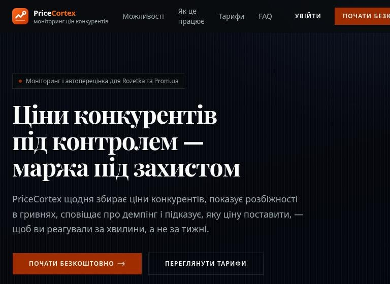

PriceCortex
B2B SaaS that tracks competitor prices on Rozetka and Prom.ua for online sellers.
- Daily price collection runs in n8n with FlareSolverr on a Hetzner server
- Dumping alerts, pricing rules and auto-repricing through the marketplace Seller API
- AI-assisted matching of analog products; seller API credentials encrypted with AES-256-GCM
- Team roles, paid plans via LiqPay, 24 test files covering pricing and repricing logic
Stack: Next.js 16, React 19, Tailwind 4, shadcn/ui, Neon Postgres, NextAuth v5, n8n, OpenAI, LiqPay, Vitest
Open livePrivate repo, code on request